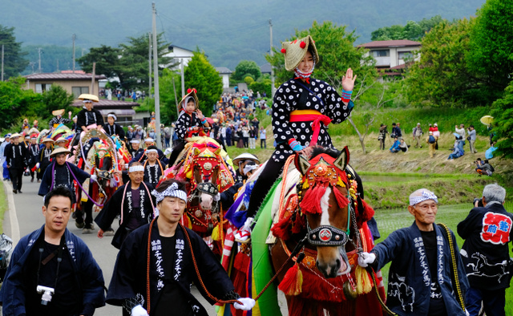

「チャグチャグ馬コ」は使役に使われる馬に感謝し、一年に一度飾りたてその労をねぎらうのが目的です。
祭りに参加する馬の中には、伐採作業に使役馬として働いている馬もいます。
山の仕事に比べればチャグチャグの装束など軽いもの。 行列の中でひときわ堂々とした姿を見せます。
「チャグチャグ馬コ」は使役に使われる馬に感謝し、一年に一度飾りたてその労をねぎらうのが目的です。
祭りに参加する馬の中には、伐採作業に使役馬として働いている馬もいます。
山の仕事に比べればチャグチャグの装束など軽いもの。 行列の中でひときわ堂々とした姿を見せます。
1597年、沢内村の馬が野良しごとの途中で暴れ出し、滝沢まで駆けてきて死んでしまった。
村人たちはこれを手厚く葬って祠を建てた。
この祭りは、馬の死から始まったものでありながら、村人たちにとっては神聖で重要な行事となり、地域の結束を強化する機会ともなっています。蒼前神社は、村の歴史と信仰を背負って、村人たちにとって不可欠な存在となったのでした。
これが蒼前神社の始まりといわれ、以来５月５日の端午の節句には仕事を休んで馬に飾りをつけ、この神社に参拝するようになった。
チャグチャグ馬コ行進に因んで作られた民芸品の1つで、戦後に盛岡近郊の人々の手内職として始められたものです。
本物の馬コ同様に着飾り、「チャグチャグ」と可愛らしい鈴の音を響かせます。 1つ1つ手作りで、縁起物として贈り物に喜ばれています。
〒○○○-○○○
岩手県○○市○○町〇丁目○○-○○
☏ 000-0000-0000
fax 000-0000-0000